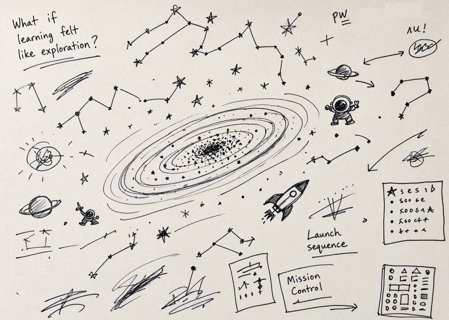

Behind the Work
Making a
Complex Product
Memorable
How do you make a technical product memorable without making it feel less technical?
Sometimes the answer isn't simplifying the technology. It's finding a story people want to follow.

Mission 01
The Mission
Build field confidence around a complex cloud database product.
Create a scalable technical enablement program that helped sellers and technical teams understand the product, recognize where it fit, and confidently bring it into customer conversations.
Mission 02
The Challenge
How do you make one product memorable inside an organization with hundreds of competing priorities?
The challenge wasn't that the product was lacking capabilities. It was that sellers had a lot of information, but not always the context to know when the product was relevant and be able to explain the value in a way customers could understand.
They didn't need to become distributed database experts. They needed a lightweight way to understand when and why to position it and how to communicate its value.
Mission 03
The Blueprint
People remember stories before they remember features.
Since the challenge was making a complex product easier to recognize, remember, and talk about,
a training deck wasn't going to fix this.
There was simply too much to remember. I didn't need sellers to become database experts. I
needed them to recognize a few important things: what problem the product solved, when it was a
good fit, and how to talk about it.
One thing I'd learned was sellers listen to other sellers.
So instead of relying on one big training moment, I gave people stories they could share (led by
their peers), resources they could come back to, and examples they could use in the field with
their customers.
The goal wasn't to teach everything.
It was to give people what they needed to start the conversation. And enough confidence to keep
it going.
Mission 04
The Launch
Into the Cosmos: A Coding Odyssey.
Due to the product name, the space theme felt like a natural way to make the learning memorable
without making the technology less technical.
Inspired by Cosmos: A Spacetime Odyssey, I built Into the
Cosmos.
But this theme was only the vehicle, not the strategy.
Instead of another one-time training event, Into the Cosmos became an ongoing experience built
around episodes. Storytelling, technical education, community, and practical resources gave
people different ways to engage with the product and build confidence over time.
I knew people were tired of dry enablement. Taking a different approach felt like a risk worth
taking.
The goal wasn't to make the technology more simple. It was to make people curious enough to
explore
it.
Mission 05
The Legacy
Enablement is rarely a content issue.
It's a behavior change problem.
✓ The conversation shifted. They had clearer customer scenarios and stories to
bring into their conversations.
✓ Confidence replaced hesitation. Each episode reinforced the same core ideas
in a different way. Over time, the field became more familiar with the product without having to
absorb everything at once.
✓ The community carried it forward. People began contributing ideas,
volunteering for episodes, and sharing their own customer stories.
What started as an enablement initiative became something the community helped shape.
Mission 06
Mission Debrief
Lessons from building confidence.
Key takeaway
One thing I learned is that people don't adopt products because they've completed training.
They adopt products because they feel confident talking about them.
What I underestimated
This project changed how I think about enablement.
I assumed that if we built great technical content, people would naturally find it.
They didn't.
The problem wasn't a lack of information. There was already plenty of that. What sellers lacked
was the context to recognize when the product was relevant to a customer, and the confidence to
articulate its value.
That changed how I approached the work. Instead of asking, What content do we need? I
started asking, What do we need people to do differently?
That meant giving sellers recognizable customer scenarios, stories they could remember, and
multiple opportunities to hear and use the same ideas.
Training was only one part of it.
← Back to Behind the Work